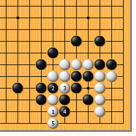
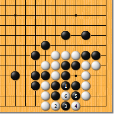
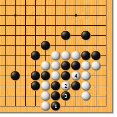
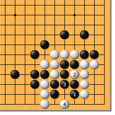
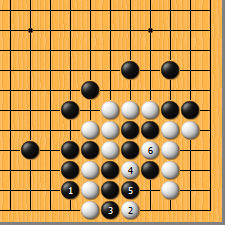
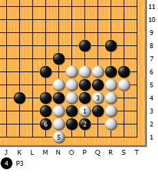
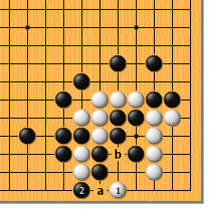

|  |  | |
| 图1 白1立，强硬。黑2冲，白3断，黑4贴，是必然的变化。接下来，白5单立，是冷静的好手！
| 图2 黑1粘，直接补掉毛病，是最佳应手，这样黑有四气。白2冲，黑3挡，白4打，好手！黑5鼓也是最顽强的应手，白6提，结果成劫。 | |
|
 |
 | |
图3 前图的黑1不可于本图1位紧气，否则反而是自紧一气。白2扑，黑3提，白4再打时，黑粘不上。
| 图4 黑1如在这边挡，看似凶悍，实为俗手。白简单于2位打，待黑3位粘，再于4位要点一点，对杀黑明显慢一气。
| |
|
 |
 | |
图5 黑1从外边收气，会不会好一点呢？对此，白2跳，是收气的要点。为避免白渡过，黑3只好遮断，但同时也是自紧一气。白4扑、6打，黑接不上。 | 图6 白1如果先扑，就妙味全无。黑2提，白3打，黑4可粘，白5再立时，黑不会傻乎乎地从里面自紧一气，必然走6位紧气，白不行。
| |
|  | 您的高见 | |
图7 白1飞，貌似轻妙。黑如a位遮断，白b扑的手段复活，白就成功了。然而，黑可于2位简单吃净，白没有使黑接不归的手段。 |